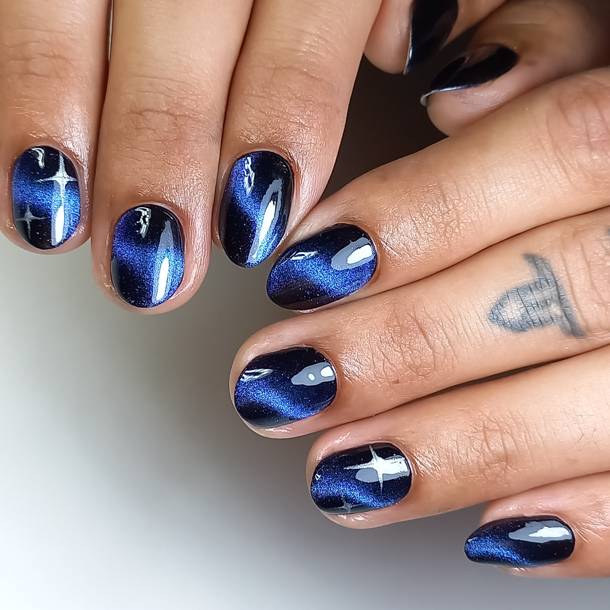
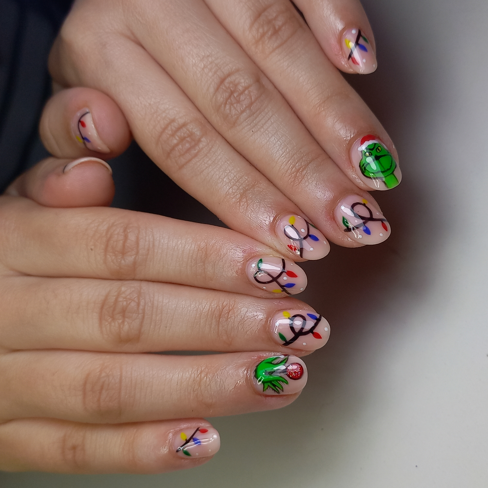
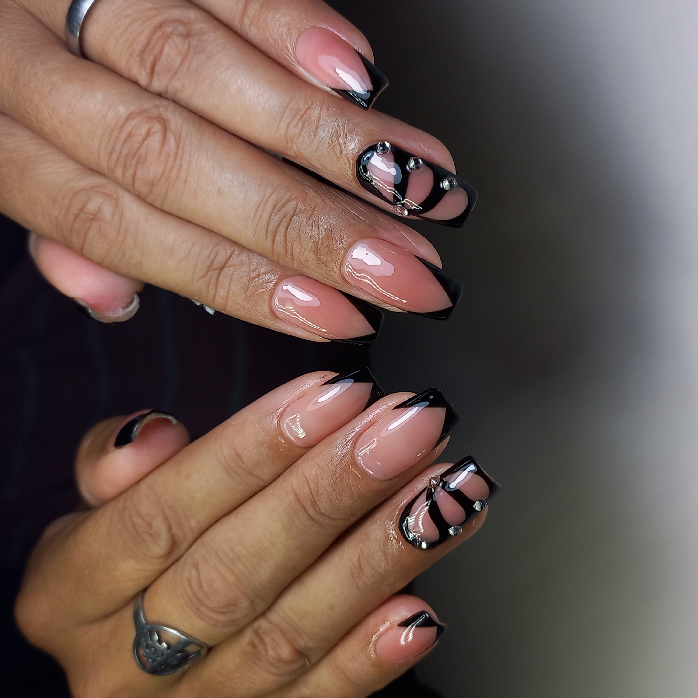
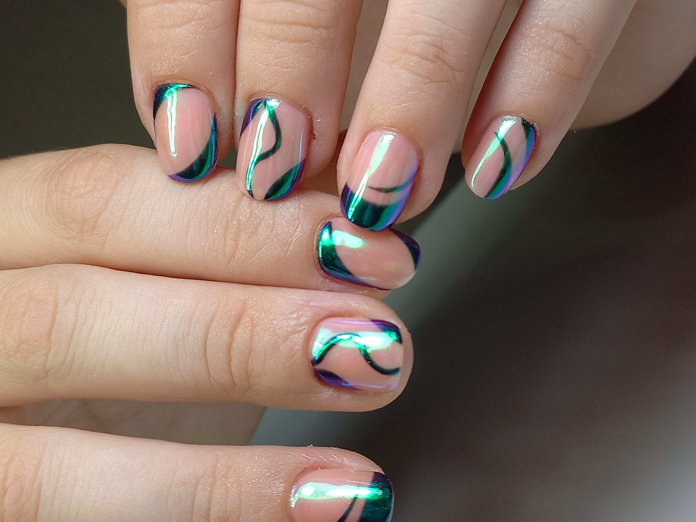
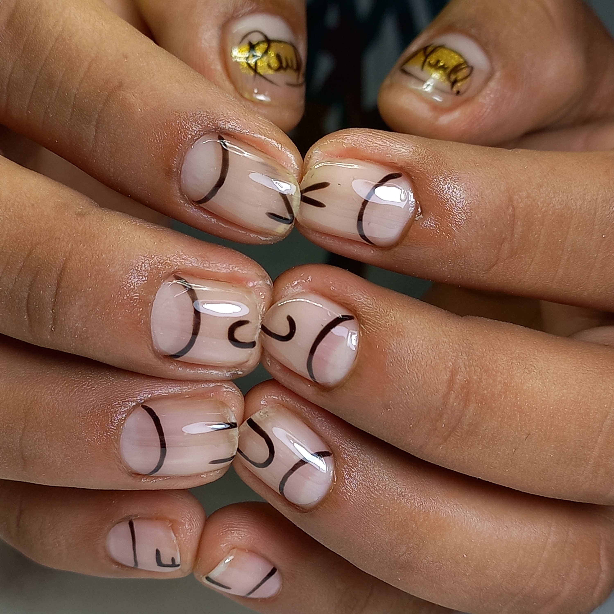
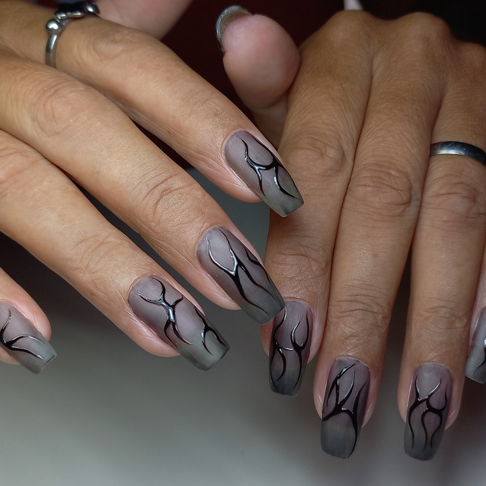
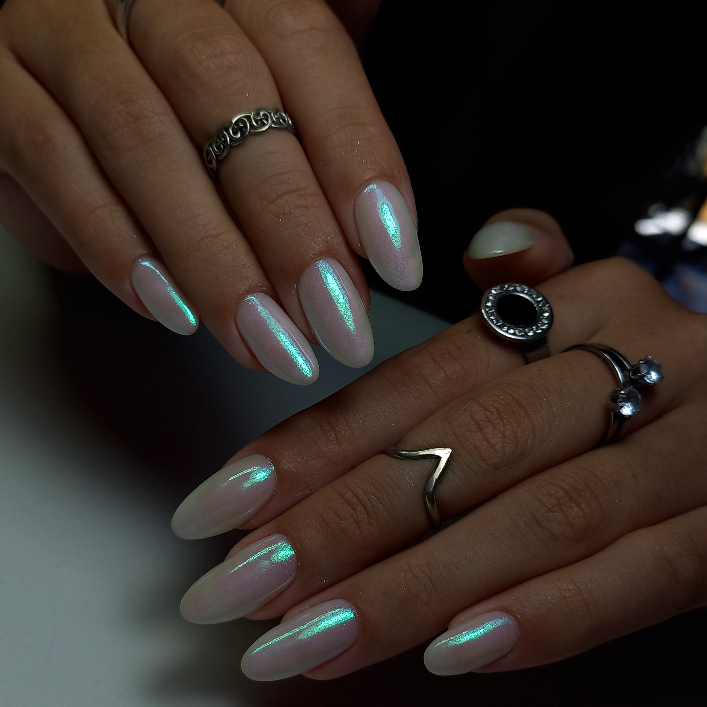
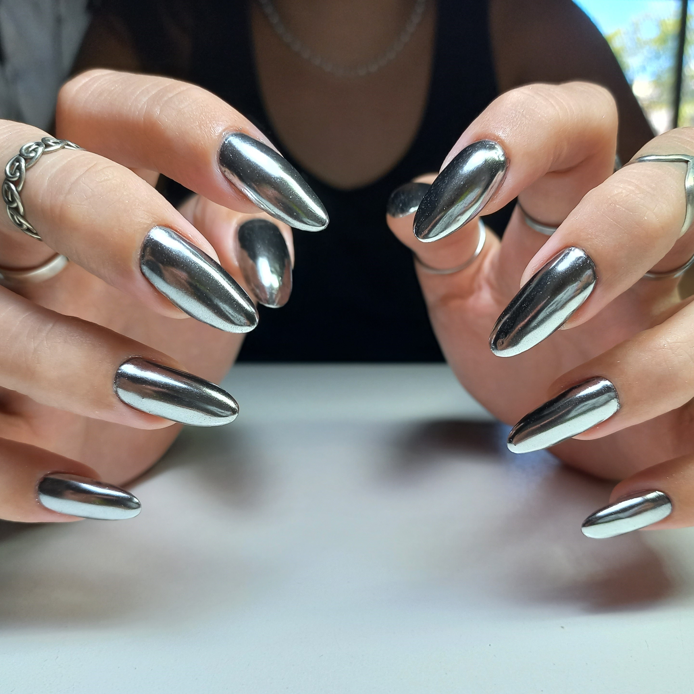
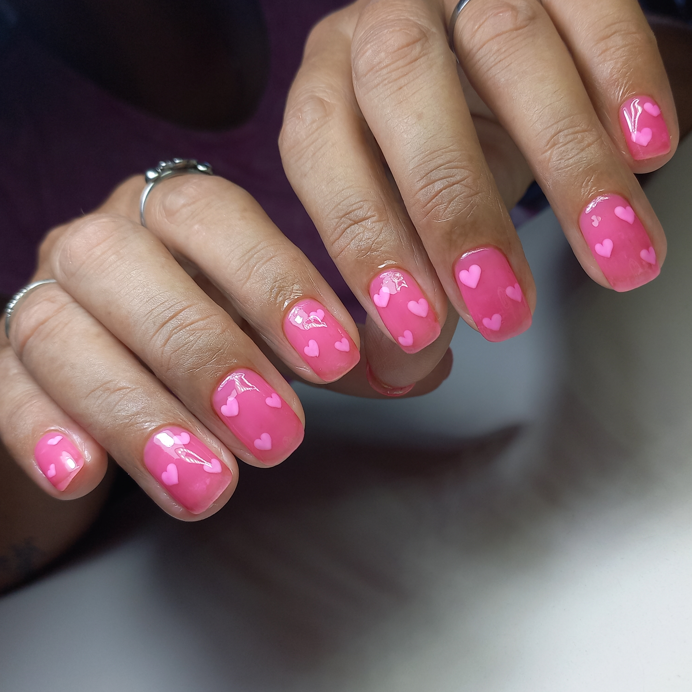
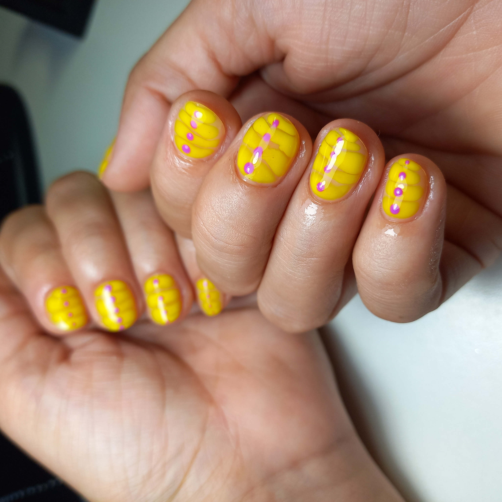

Semipermanente
El servicio de esmaltado semipermanente ofrece un acabado que dura hasta dos
semanas, ¡perfecto para aquellas que no les gusta retocar su esmaltado cada tres días!
Recomendamos un retoque cada dos semanas para mantener tus uñas siempre en su mejor estado.
Para asegurar resultados óptimos, evita el contacto con productos químicos agresivos y mima tus
uñas con
aceite para cutículas regularmente.
Mirá nuestros trabajos









